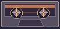

Penerima chiptune
88.7 MHz
Siap diputar
Arsip siaran
SISI A
A1 Pulau Gobi
Serial animasi low-poly dengan pulau yang tumbuh tiap episode.
A2 KALARYA
Ruang kerja untuk tugas, proyek, dan kolaborasi.
A3 PisGo
AI untuk menilai kematangan pisang Cavendish dan merencanakan panen.
SISI B
B1 Karaga
Desain dashboard dan splash screen aplikasi pencatatan keuangan.
B2 JedaIn
Wisata wellness, Juara Harapan 1 di HOLOGY 9.0.
B3 Smart Door Lock
Eksperimen ESP32 dengan kunci fisik.